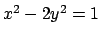
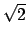
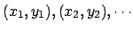
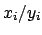
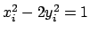
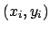
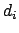

Les ancients Grecs ont rencontré l'équation
 dans leurs efforts pour comprendre le nombre , la diagonale du carré unité, dont ils savaient qu'il était irrationnel. A cette époque, ils avaient trouvé une méthode pour produire des solutions arbitrairement grandes
 de cette équation. Ils avaient ainsi à leur disposition des fractions  qui approximaient . En effet, si
, alors on a
Les Grecs ont découvert les solutions  parmi les ``nombres transversaux'' et les ``nombres diagonaux''  définis par